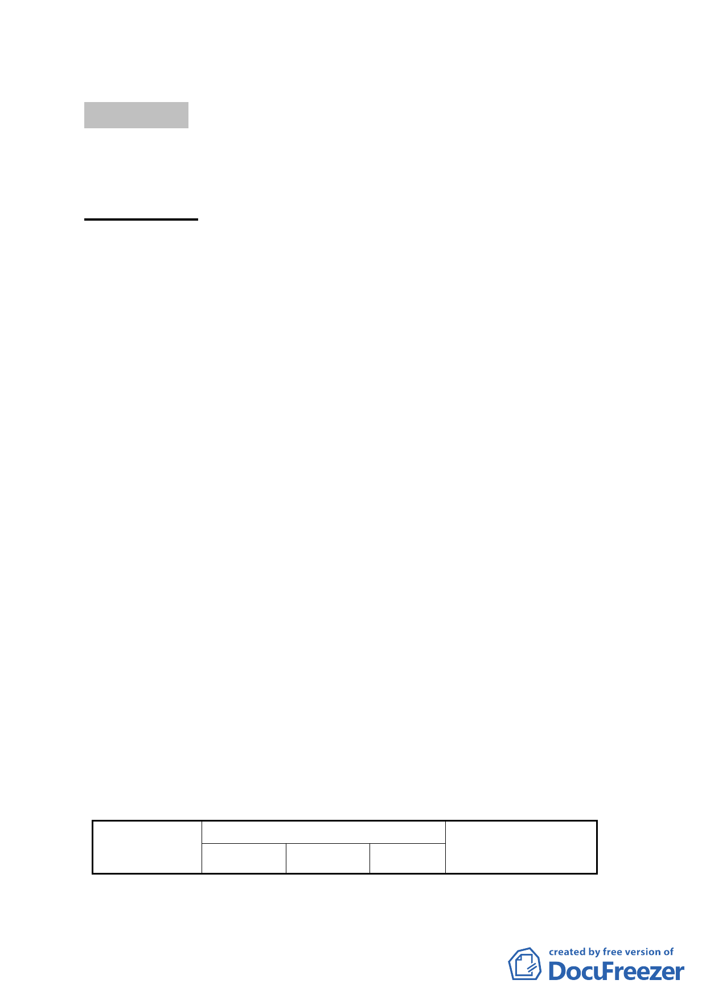

討論事項 四
案名：變更臺北市中正區南海段五小段 56-1 地號等 3 筆土地（植
物園北側）道路用地為公園用地細部計畫案
案情概要說明：
一、本計畫區位於本市植物園北側，博愛路出入口東側，包括中
正區南海段五小段 56-1、57-1、462-2 地號等 3 筆土地，為
寬 8 公尺、長約 60 公尺、面積 478 平方公尺之南北向計畫道
路。
二、計畫區現況：現為植物園之裸子植物區範圍內，由行政院農
業委員會林業試驗所管有。
三、計畫緣起：
(一) 本市植物園北側（博愛路出入口東側）南北向計畫道路，其
中南海段五小段57-1、462-2地號，係本府60年1月23日府工
二字第58097號公告「為本市愛國西路和平西路羅斯福路中華
路所圍地區細部計畫案」內劃定計畫道路之部分；另同小段
56-1地號則係本府69年4月15日府工二字第10713號公告「修
訂愛國西路、羅斯福路、和平西路、縱貫鐵路所圍地區細部
計畫（通盤檢討）案」內，其為增加市民遊憩場所及維護植
物園之完整，變更博愛路東側住宅用地為8公尺計畫道路迄
今。
(二) 該計畫道路現況為植物園使用範圍，有珍貴的樹木及鳥類棲
息，為維護生態及維持植物園之完整性，實有重新檢討之必
要，爰依都市計畫法第27條第1項第4款辦理本計畫變更。
四、計畫內容概述：
（一） 變更土地使用分區：
位置
變更內容
原計畫 新計畫
面積(㎡)
變更理由
-6-